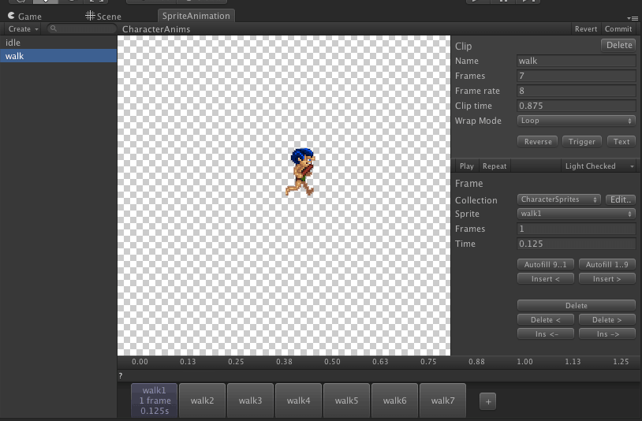

Documentation
Script Reference
Forum
Documentation
Script Reference
Forum
This tutorial will show you how to create a Sprite Animation. We will be using some additional sprites for this example which aren't distributed with the toolkit. You can download these sprites from here. These sprites are from SpriteLib.
Extract the textures into your Unity project workspace. We put ours in /Assets/Walkthrough/animation/sprites.
Create a sprite collection and add all these sprites to the collection. The newly added sprites will all be selected. Before you click Commit, set the Anchor to LowerLeft and click apply - this will set all the anchors on all newly created sprites to the lower left.
Click commit on the sprite collection. This is the sprite collection set-up done.
We will now proceed to create the Sprite Animation. Create it in the collection by selecting "Create > tk2d > Sprite Animation" in the Project Window. Name it CharacterAnims.
Select the newly created sprite animation in the project window, and open the sprite animation editor by clicking Open Editor.
Click "Create > Clip" in the sprite animation editor. This will create a new clip which you can edit.
Name the newly created clip "idle". Set up the window as shown below.

Create a new clip and name it "walk". Select the first frame (walk1) and click AutoFill1..9. All the rest of the frames will be automatically added. Autofill1..9 finds frames numbered sequentially from the currently selected frame.

Add another clip and call it "hit". Add the first frame of the clip (hit1) and click AutoFill1..9 to fill the rest of the frames.